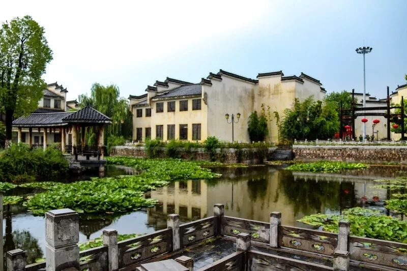
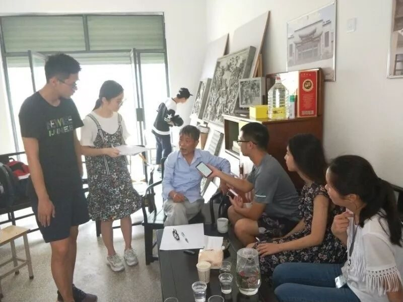
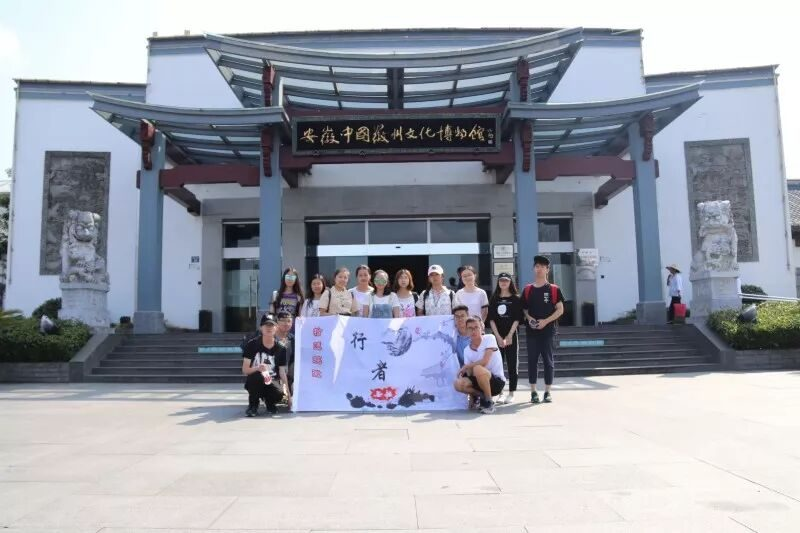

【素笺寄情·十四】盛夏，遇见醉美徽路

不期而遇，不言而喻。如约而至，来日可期。
如果说，这个夏天，有什么不平凡的事情发生。我一定会说，我遇见了行者，遇见了许多心怀热忱、身怀绝技的伙伴。如果说在此之前，我对于行者的认识，仅限于文化与旅行，那么这段旅程带给我的惊喜与感动，让我的收获远超于此。傍晚开会的笑语，夜游老街的快意，共赏风景的温润，采访时的协调配合，激扬文字的困惑与灵感，都化为了最美的回忆。这个夏天，因行者之旅而分外耀眼和精彩。


与行者第一次相遇，是在行程规划开会时。从陌生到熟悉，从各抒己见到达成共识，如同相识已久的老友，默契而又心有灵犀。一路上，每一个脚印，都洒满了队员们的欢笑和汗水。这个团队，年轻而热情，温馨而友爱。它如一叶扁舟，载着向往与希冀，行驶于茫茫的文化之海。
”
徽州的天气可谓“东边日出西边雨”，仿佛一位任性的少年。当我们踏入非遗园的那一刻，酷热与暴雨的折磨瞬间烟消云散。雨后的园子，掩映在一片碧绿里，有一份绰约多姿的妩媚，精致又带着几分慵懒。那安静的时光里，一池安静的荷，开放在心湖的涟漪。盛夏的徽州，尽是雨意横斜的故事，在烟波浩渺的记忆里回荡。”

造访大国工匠方新中先生一程令人印象深刻。尽管年已古稀，方老仍谈笑风生，侃侃而谈。“树人先树德，”方老如是说。采访过程中，方老不仅全无架子，而且对我们关怀备至，真正体现一位德艺双馨大师的气度与风范。“先生之风，山高水长。”文化的源远流长，正是靠着许许多多方老这样初心不改、一生坚守的传承者。
水墨宏村，一座散落在人间的仙境。站在南湖远眺，白云掩映下的黄山余脉羊栈岭、雷岗山和近处的白墙黑瓦马头墙倒映在山水之中，迷幻如一帘幽梦，沧桑如岁月烟志，温存如涟漪绉纱。没有多余的装点，一切恰如山水画中的浑然天成，快意洒脱。
千百年过去了，古屋的院落依旧晨夕风露，阶柳庭花，正堂之中依旧雕栏玉砌，画栋雕梁，推开门走进，却尽是贩卖商品的喧嚣与嘈杂。商业文明无情地侵蚀着这座含情脉脉的文化故居，让它只剩下赤裸裸的外壳，精神实质已然不复。旧日淳朴的徽音，声声春闺的呼唤，都消失在时代的风烟之中。诚然，商业化是历史城镇发展的必然结果，但其对本土历史文化原真性的破坏，依然令人痛心。

再美的相聚也终有曲终人散的一天。当大家四散而归，虽没有隆重的仪式，悄悄即是别离的笙箫。回首这段旅程，有过迷茫，有过彷徨。但在文化的苦旅中，我们执著坚守着，掷地有声，步步铿锵。
来日可期，愿再相逢，共寻文化之美。
图片｜沈华，盛暘
文案｜宋清风
排版｜邓子孚
审核｜应雨珊，潘雯雯
长按扫码关注我们